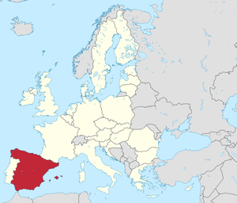

Spanje op de kaart
Over Spanje
Spanje is een land dat zich in het zuidwesten van Europa bevindt, op het Iberisch Schiereiland, samen met Portugal. Het is bekend om zijn rijke geschiedenis, diverse cultuur, prachtige landschappen en levendige levensstijl.
Madrid is de hoofdstad. Spaans is de officiële taal, maar er zijn ook regionale talen zoals Catalaans en Baskisch.
De Spaanse keuken is wereldwijd geliefd, met gerechten zoals paella en tapas.
Iconische architectuur, zoals de werken van Antoni Gaudí, siert steden zoals Barcelona.